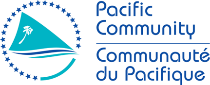
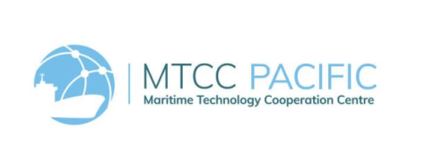

Draft programme dated 17 August 2026. Named speakers are as listed; remaining Tongan speakers and the main training venue are still to be confirmed. The live ROV demonstration is at Faua Wharf.


IMO–Norad TEST Biofouling Project
Draft programme dated 17 August 2026. Named speakers are as listed; remaining Tongan speakers and the main training venue are still to be confirmed. The live ROV demonstration is at Faua Wharf.